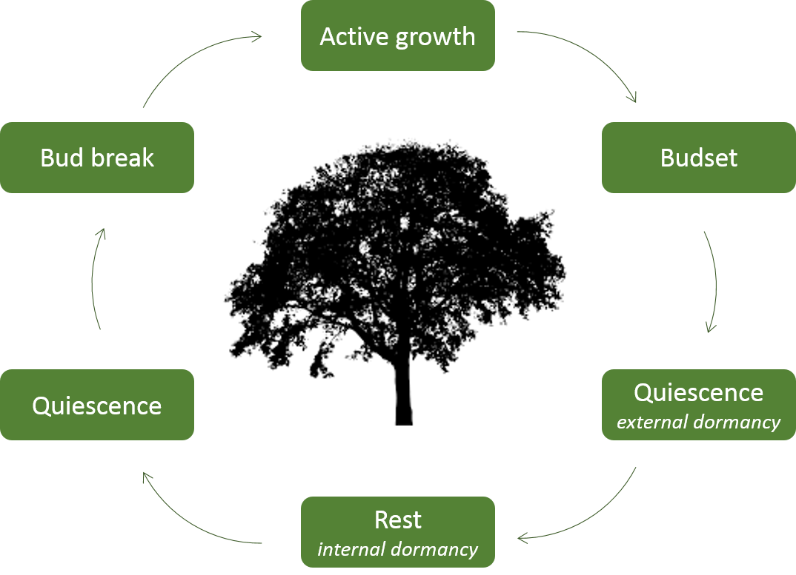

SpaDES module - from R to SpaDES
vignettes/04a-MyFirstModule.Rmd
04a-MyFirstModule.Rmdage object at 1, and increment it at each step of time, or t. In both cases time and t are the loop counters, but only in the second case is the counter being effectively “used” inside the loop.
## Simple case:
age <- 1
for (time in 1:10) {
age <- age + 1
}Let’s tear it apart and understand each individual part:
age <- 1
age <- age + 1In both cases, we have to: - initialise a storage vector - define time boundaries - define the step, or incremental unit (in this case implicit) - define the content of the for-loop that is going to be iterated

In SpaDES, events are first defined, then scheduled to happen at a particular point in time:
R
## initializing
age <- 1
## boundaries
times = list(start = 1, end = 10)
## event definition (content), define what the event will do
aging <- age + 1
## event execution and scheduling - note the step definition
events <- {
doEvent("aging")
scheduleEvent("aging", when = now + 1)
}As you can see, event execution and scheduling in SpaDES have the same fundamental components of a for-loop: initialize, bounds, step, content
SpaDES
## initialisation
age <- 1
## boundaries
times = list(start = 1, end = 10)
## event definition (content)
aging <- function(age) {
age <- age + 1
}
## event execution and scheduling
events <- {
doEvent("aging")
scheduleEvent("aging", when = now + 1)
}
# eventTime moduleName eventType
# 1: 0 loop init
# 2: 0 loop addOneYear
# 3: 1 loop addOneYear
# 4: 2 loop addOneYear
# 5: 3 loop addOneYear
# 6: 4 loop addOneYear
# 7: 5 loop addOneYear
# 8: 6 loop addOneYear
# 9: 7 loop addOneYear
# 10: 8 loop addOneYear
# 11: 9 loop addOneYear
# 12: 10 loop addOneYear
library(SpaDES)
## set/create directories
setPaths() ## default temporary directories
setPaths(cachePath = "~/SpaDES_myModule/cache",
inputPath = "~/SpaDES_myModule/inputs",
modulePath = "~/SpaDES_myModule/modules",
outputPath = "~/SpaDES_myModule/outputs")
## get paths
getPaths()
newModule("loop", path = getPaths()$modulePath)/!\ Atention: running newModule twice will overwrite any changes! /!\
We will first built the module “skeleton” and then define its parameters and eventual inputs/outpupts.
doEvent functiondoEvent is the core of any SpaDES modulenewModule, doEvent is automatically suffixed with the module name (in this case “loop”, so doEvent.loop) - /!\ this is very important /!\
init, plot, save, event1 and event2
init is mandatory - /!\ never EVER remove it, or change its name /!\
doEvent.loop = function(sim, eventTime, eventType) {
switch(
eventType,
init = {
## event content
sim$age <- 1
## schedule event
sim <- scheduleEvent(sim, start(sim), "loop", "addOneYear")
},
addOneYear = {
## event content:
sim$age <- sim$age + 1
## schedule event
sim <- scheduleEvent(sim, time(sim) + P(sim)$Step, "loop", "addOneYear")
},
warning(paste("Undefined event type: '", current(sim)[1, "eventType", with = FALSE],
"' in module '", current(sim)[1, "moduleName", with = FALSE], "'", sep = ""))
)
return(invisible(sim))
}Can you see where initialize, bounds, step, content are?
In SpaDES, parameters can be “global” (of type .<param_name.) or module specific
Parameters do not participate in the flow of information/data between modules
Parameters can be changed by the user at the higher level (i.e. without changing the module code in the .R script)
What do you think can be a parameter in our case?
Parameters are defined in definedModule, using the defineParameter function
This part of the module is the metadata, containing important information about the module
It also indicates to other modules what to expect as its inputs and outputs
Time boundaries do not need to be defined as parameters - they have their own special objects
defineModule(sim, list(
name = "loop",
description = NA, #"insert module description here",
keywords = NA, # c("insert key words here"),
authors = person("First", "Last", email = "first.last@example.com", role = c("aut", "cre")),
childModules = character(0),
version = list(SpaDES.core = "0.2.2.9006", loop = "0.0.1"),
spatialExtent = raster::extent(rep(NA_real_, 4)),
timeframe = as.POSIXlt(c(NA, NA)),
timeunit = "year",
citation = list("citation.bib"),
documentation = list("README.txt", "loop.Rmd"),
reqdPkgs = list(),
parameters = rbind(
#defineParameter("paramName", "paramClass", value, min, max, "parameter description"),
defineParameter(".plotInitialTime", "numeric", NA, NA, NA, "This describes the simulation time at which the first plot event should occur"),
defineParameter(".plotInterval", "numeric", NA, NA, NA, "This describes the simulation time interval between plot events"),
defineParameter(".saveInitialTime", "numeric", NA, NA, NA, "This describes the simulation time at which the first save event should occur"),
defineParameter(".saveInterval", "numeric", NA, NA, NA, "This describes the simulation time interval between save events"),
defineParameter(".useCache", "logical", FALSE, NA, NA, "Should this entire module be run with caching activated? This is generally intended for data-type modules, where stochasticity and time are not relevant")
)
))Inputs and outputs, unlike parameters, are objects that establish links between modules, and between the user and modules
They are always contained in the simList object
A good way of thinking about what input and output objects are is: sim$outputs <- sim$inputs
do we have any inputs? What about outputs?
Input and output objects are also defined in defineModule using the expectsInput and createsOutput functions
inputObjects = bind_rows(
#expectsInput("objectName", "objectClass", "input object description", sourceURL, ...),
expectsInput(objectName = NA, objectClass = NA, desc = NA, sourceURL = NA)
)
outputObjects = bind_rows(
#createsOutput("objectName", "objectClass", "output object description", ...),
createsOutput(objectName = NA, objectClass = NA, desc = NA)
)
defineModule(sim, list(
name = "loop",
description = "For-loop in SpaDES",
keywords = c("loops", "age", "simple"),
authors = person("John", "Doe", email = "john.doe@example.com", role = c("aut", "cre")),
childModules = character(0),
version = list(SpaDES.core = "0.1.1.9005", loop = "0.0.1"),
spatialExtent = raster::extent(rep(NA_real_, 4)),
timeframe = as.POSIXlt(c(NA, NA)),
timeunit = "year",
citation = list("citation.bib"),
documentation = list("README.txt", "loop.Rmd"),
reqdPkgs = list(),
parameters = rbind(
defineParameter(name = "Step", class = "numeric", default = 1, min = NA, max = NA, desc = "Time step")
),
inputObjects = bind_rows(
#expectsInput("objectName", "objectClass", "input object description", sourceURL, ...),
expectsInput(objectName = NA, objectClass = NA, desc = NA, sourceURL = NA)
),
outputObjects = bind_rows(
#createsOutput("objectName", "objectClass", "output object description", ...),
createsOutput(objectName = "age", objectClass = "integer", desc = "Age vector")
)
))Now let’s give our loop.Rmd an example - let’s set up the “simulation” run. 1. Check the event queue before and after running spades 2. Produce module diagrams before running spades 3. Run the “simulation” 4. Compare with outputs produced by the “normal” loop
## Simulation setup
paths <- getPaths()
modules <- list("loop")
times <- list(start = 1, end = 10)
parameters <- list(loop = list(Step = 1L))
## SpaDES Events
mySim <- simInit(paths = paths, modules = modules,
times = times, params = parameters) ## remove the "L" from Step and see what happens
events(mySim) ## shows scheduled events
mySimOut <- spades(mySim, debug = TRUE) ## execute events
events(mySimOut) ##
completed(mySimOut) ## shows completed events
mySimOut$age
## Loop version
age <- 1
for (time in 1:10) {
age <- age + 1
}
## Compare outputs
mySimOut$age
ageNote that mySimOut is a pointer to the updated/changed mySim not a true new simList object
SpaDESyNotice that below the doEvent.loop function there are templates for other funcitons that can be used inside the events. Keeping the code inside these functions increases modularity and flexibility, as functions are self-contained.
init and the addOneYear events.
### Initialisation function
loopInit <- function(sim) {
sim$age <- 1
return(invisible(sim))
}
### Aging event function
aging <- function(age = sim$age) {
age <- age + 1
return(age)
}NOTE: We present above two different ways of specifying a function. One always passed the sim object to the function and return the sim oject modified. The second returns the results of a function to the sim object as a new object “in” it.
doEvent.loop so that the appropriate functions are called inside their respective events
doEvent.loop = function(sim, eventTime, eventType) {
switch(
eventType,
init = {
## event content
# sim$age <- 1
## OR
sim <- loopInit(sim)
## schedule event
sim <- scheduleEvent(sim, start(sim), "loop", "addOneYear")
},
addOneYear = {
## event content:
# sim$age <- sim$age + 1
## OR:
sim$age <- aging(age = sim$age)
## schedule event
sim <- scheduleEvent(sim, time(sim) + P(sim)$Step, "loop", "addOneYear")
},
warning(paste("Undefined event type: '", current(sim)[1, "eventType", with = FALSE],
"' in module '", current(sim)[1, "moduleName", with = FALSE], "'", sep = ""))
)
return(invisible(sim))
}